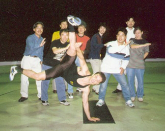

Интервью с Местре Марсело: Встречайте настоящего Эдди Гордо!
Представляю вашему вниманию мой скромный перевод старого интервью из журнала «GamePro Online Magazine» и биографии местре Marcelo „Caveirinha“, основателя школы Capoeira Mandinga.
Местре Marcelo Caveirinha (настоящее имя Marcelo Pereira) родился в Сан-Паулу (Бразилия), с 14 лет начал заниматься капоэйрой на улице, пока не попал к Местре Суассуне (Mestre Suassuna), основателю “Associacao de Capoeira Cordão de Ouro”.
В 1984 году Марсело перебрался жить в США, где стал третьим мастером капоэйры из Бразилии, которые на тот момент постоянно проживали в штатах. В далекие 80-е, выпускники школы не имели права открывать свои группы под «эгидой» альма-матер, как это принято делать сейчас, поэтому Местре Марсело открыл свою группу под названием Associação de Capoeira Senzala Grande (1979), которая позже была переименована в Capoeira Mandinga.
В 90-хх японский разработчик компьютерных игр Namco пригласил Марсело для создания персонажа игры Tekken-3. Благодаря технологии «motion capture» (захват движения) Марсело „подарил“ все движения, приемы и комбо персонажу-капоэйристу Эдди Гордо (Eddy Gordo), а также персонажам Tiger и Christie Montero в последующих изданиях игры (Tekken 4, 5 и 6).
Интервью журналу GamePro
[…]
GAMEPRO: Каково это быть прототипом персонажа в игре? Встретили ли вы каких-нибудь интересных людей?
MARCELO: Это был очень веселый проект и мне понравилось участвовать. Команда Namco в Японии принимала меня как короля. Мы с интересом обсуждали проект, создавали новые идеи и ели много вкусной еды!
GAMEPRO: Во время съемок вы получили какие-нибудь травмы? И не травмировали ли кого случайно?
MARCELO: Травм во время съемок я не получил, но был травмирован до этого, что немного ограничило акробатику героя. Я никому не причинил вреда, т.к. весь «motion capture» я делал один. Это одна из причин, почему я смог показать только 20% капоэйры в игре. Чтобы сделать другие крутые движения мне бы потребовался опытный партнер. Любой другой неопытный человек, незнакомый с этим искусством мог бы получить серьезные травмы.
GAMEPRO: Вы что-нибудь раньше подобное делали?
MARCELO: Ни разу. Я снимался в фильмах, выступал на телевидении, в театре и в прочей самодеятельности, но этот раз был по-настоящему уникальным.
[…]
GAMEPRO: Опыт работы с Namco помог Вашей карьере или придал капоэйре большую известность?
MARCELO: Нет, на моей карьере это пока никак не отразилось. Капоэйра, с другой стороны, определенно стала более известной в мире.
GAMEPRO: Вы работаете в создании других игр?
MARCELO: Пока нет, но я бы хотел.
GAMEPRO: Как Namco узнала о вас? Вы были удивлены, когда вас пригласили?
MARCELO: Я думаю, что они услышали обо мне на Международном Семинаре Капоэйры в Сан-Франциско, который я организовал в 1995-м году. Я был удивлен и почтён, что буду первым человеком, который представит капоэйру в этом новом измерении. Как и другие мастера, я волновался о том, что капоэйра была показана без искажений. Для нас традиция — чрезвычайно важная вещь, на которой основывается искусство.
GAMEPRO: Вы довольны тем, как ваш персонаж, Эдди Гордо, получился в Tekken 3?
MARCELO: По шкале от 0 до 10, я даю Эдди Гордо 6 баллов. Как я упоминал прежде, традиция — это очень важно. У капоэйристов есть особые прозвища, такие как Ze Faisca (”Искра”), Cobra Verde (”Зеленая Змея”), Gato Preto («Черный Кот»), и т.д … Было бы нормально, если имя было на английском языке, но Эдди не бразильское имя, а „Gordo“ в португальском означает ”жир”! К тому же, названия движений взяты с потолка и не соответствуют традиционным.
Костюм Эдди мог быть намного лучше, если бы отражал стандарты, принятые в капоэйре, а сильный бит барабана или традиционная музыка капоэйры могла бы добавить изюминку в динамичную «стойку» персонажа — жингу. Пожалуйста, поймите меня правильно, что я критикую только потому, что я очень предан своему искусству. Я понимаю, что Namco должны были принять во внимание тысячи деталей для всех остальных персонажей игры.
В целом, мне нравится персонаж Эдди Гордо. Я думаю, что он выполняет некоторые клевые движения и неплохие комбинации. Плюс, для аудитории, которая фактически ничего не знает о капоэйре, возможно это не самый плохой способ с ней познакомиться в первый раз.
GAMEPRO: А вы играете в Tekken 3? Если да, то за Эдди Гордо?
MARCELO: Я никогда не был поклонником видеоигр. Но я подарил моему сыну Жулиано PlayStation на Рождество, чтобы мы могли поиграть в Tekken 3 вместе. Конечно я буду играть за Эдди Гордо, но не удивлюсь, если мой шестилетний сын победит меня. В конце концов, он — поклонник Эдди Гордо номер один.
О Эдди Гордо и Tekken с официального сайта Capoeira Mandinga
[…]
Странно, но в английской версии игры названия движений были изменены и взяты с потолка. В японской версии Tekken 3, использовались бразильские названия, которые были даны Mestre Marcelo, с незначительными ошибками в произношении и написании.
Вопрос: Почему персонажа зовут Эдди и есть ли у него капоэйристское прозвище?
Ответ: Изначально, имя, которое предложил Местре Марсело персонажу было — Tony Bamba, а не Eddy Gordo. На одном из костюмов Эдди написано слово “Faisca”. Faisca означает ‘искра’ на португальском. Это и есть кличка, которую дал Местре Марсело Эдди.

Вопрос: Какого цвета его пояс?
Ответ: В одном из костюмов у Эдди есть сине-белый кордао. Не плохо для 27-летнего! (Сине-белый кордао считается третьим мастерским поясом в Системе Федерации Капоэйры и обычно требуется, по крайней мере, 25 лет, чтобы получить его).
Вопрос: Откуда взялись гимнастические движения в игре?
Ответ: Мы знаем, что Namco хотели воспользоваться движением «troca é pião», но похоже утеряли отснятый материал для этого движения в игре, поэтому, скорее всего, компания наняла гимнаста для создания „похожей“ альтернативы.
Вопрос: Какой самый эффективный удар Эдди?
Ответ: Марсело сказал Namco, что cabeçada должна быть быстрым и смертельным движением. Действительно, заядлые игроки в Tekken свидетельствуют, что cabeçada — один из коронных и сильнейших приемов в игре.
Как дань уважения к своему учителю, Марсело предложил «Комбинацию Суассуны» в игре: две кабесады в тело, сопровождаемые кабесадой в челюсть. Жаль, но Namco не включили эту смертельную комбинацию в игру.
[…]
Источники:
— Meet the real Eddy Gordo!, GamePro Online Magazine
— Capoeira Mandinga
— Частично использовался перевод Константина Евстигнеева
— UPD 01.06.2012: Отличное видео о создании персонажа Eddy Gordo